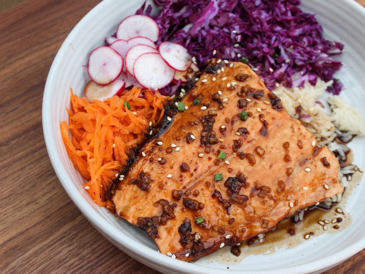

Home
Teriyaki Salmon Bowl

Description
For this teriyaki salmon bowl, salmon is baked for 15 minutes with a 4-ingredient homemade teriyaki sauce using soy sauce, brown sugar, garlic, and ginger, then served in a bowl with rice, red cabbage, carrots, and radishes.
Ingredients
- 1/4 cup low-sodium soy sauce.
- 3 tablespoons brown sugar.
- 1 small clove garlic, chopped.
- 1 tablespoon chopped fresh ginger.
- 1 (6 ounce) salmon filet.
- 1/4 cup grated carrots.
- 2 radishes, thinly sliced.
- 1 cup shredded red cabbage.
- 1 cup cooked rice.
- 1 teaspoon sesame seeds (optional).
- 1 green onion, thinly sliced (optional).
Steps
- Preheat the oven to 400 degrees F (200 degrees C) and spray a baking dish with cooking spray.
- Combine soy sauce, brown sugar, garlic, and ginger in a small bowl. Place the salmon in the prepared baking dish, skin side down. Pour teriyaki sauce over.
- Bake in the preheated oven until fish flakes easily with a fork, 12 to 15 minutes.
- Place rice in a bowl, top with salmon, and spoon over teriyaki sauce from the baking dish. Add in the shredded cabbage, grated carrots, and radishes. Sprinkle with sliced green onions and sesame seeds, to garnish.